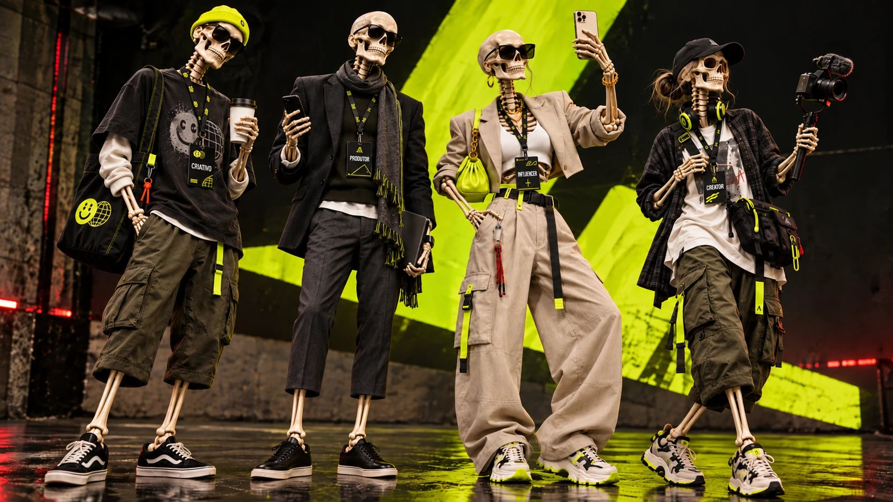
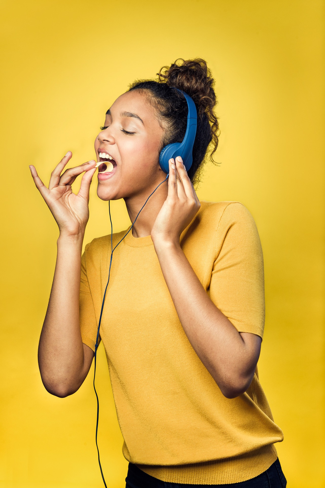
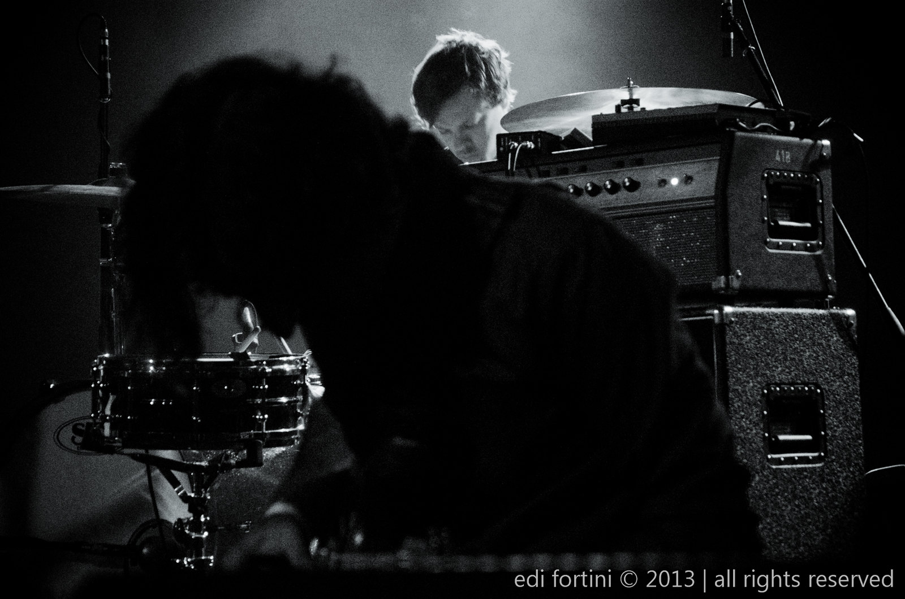
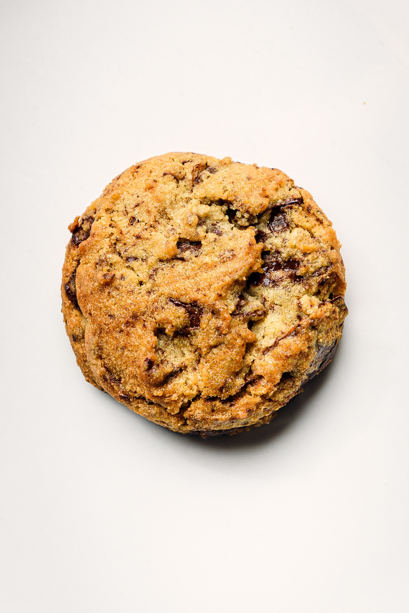

Menu +Voice on · ⟶ Portfolio
Bellintani 27ProfessionalPop quiz⟶ 12ABellintani 27PersonalPop quiz

Work Music
Music
Family
StudiesSecrets
3 ▸ 3A4 ▸ 4A5 ▸ 5A6 ▸ 6A7 ▸ 7A
[ You asked
Do you have
kids? who runs
the house?
kids? who runs
the house?
A 7-year-old princess. She runs the house; he just designs in it. Most likely he is drawing something for her right now.
Respectfully, his buddy]
Connect with meEmail: felipe@bellintani.workInsta: @bllnt_
Ask another
Menu +⟶ Portfolio
Pop quiz
Bellintani 27Pop quiz

Do you have kids?
A 7-year-old princess. She runs the house; he just designs in it.
Respectfully, his buddy ]
Respectfully, his buddy ]
Ask anything